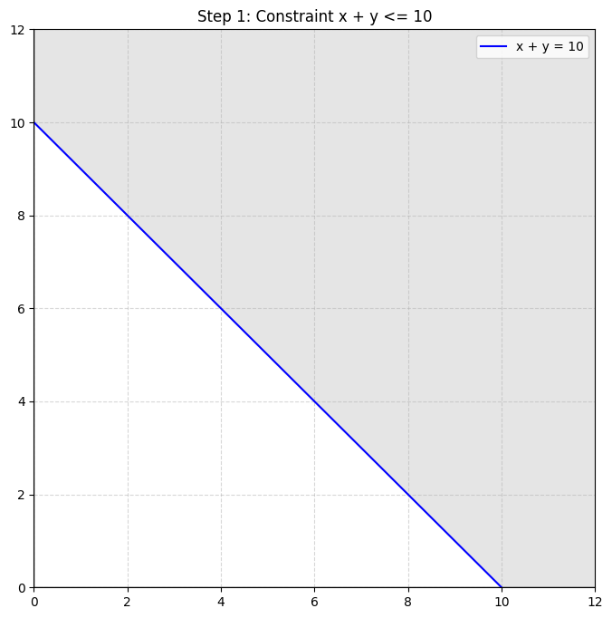
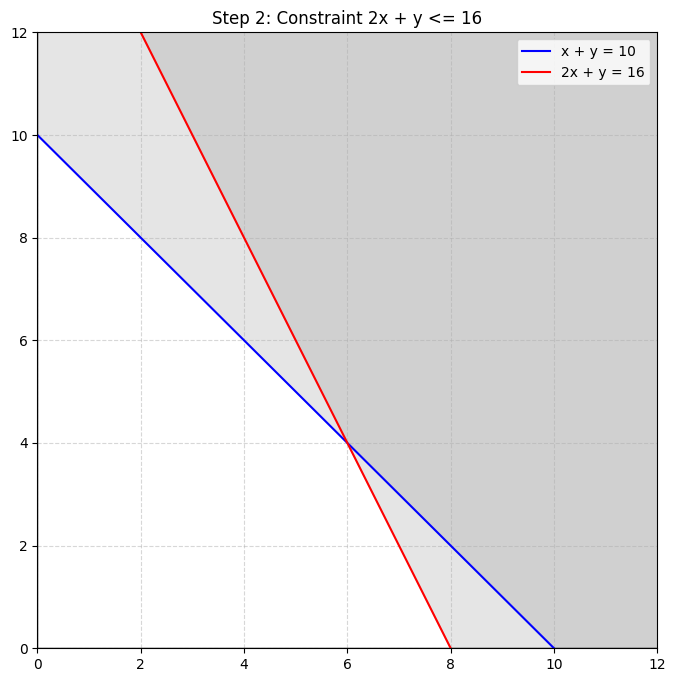
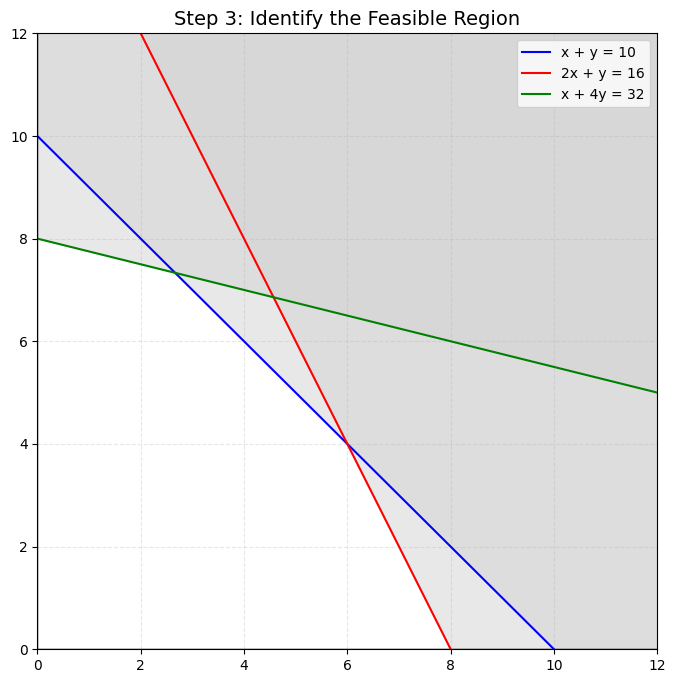
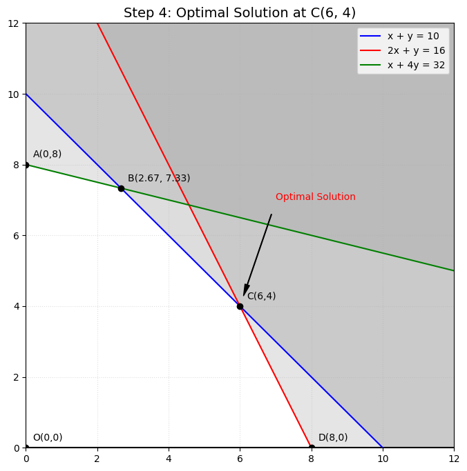
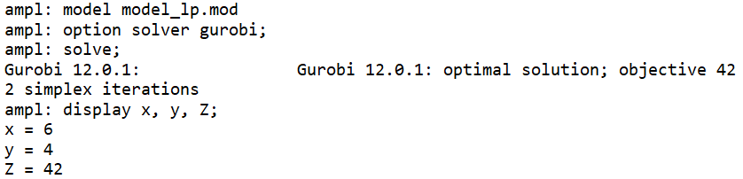

Linear Programming (Quy hoạch tuyến tính): phương pháp đồ thị (graphical method) và Simplex
Posted: 11/04/2026
Linear Programming (LP) là một kỹ thuật tối ưu hóa rất mạnh, được sử dụng để cải thiện việc ra quyết định trong nhiều lĩnh vực khác nhau. Đây là bài viết mở đầu trong chuỗi nội dung về các mô hình tối ưu cơ bản mà mình muốn chia sẻ. Bài viết đầu tiên này sẽ là phần đơn giản nhất của Linear Programming, nhằm giúp bạn nắm được những kiến thức cơ bản trước khi đi vào các nội dung nâng cao hơn. Để tiện cho việc theo dõi, mình sẽ giữ nguyên các thuật ngữ tiếng anh quan trọng và dịch theo nghĩa tiếng Việt đối với một số từ đã được chuẩn hóa (sử dụng phổ biến) trong các giáo trình tiếng Việt hiện này (mình vẫn sẽ chú thích nghĩa tiếng anh để tiện tra cứu).
Trong bài viết này, chúng ta sẽ:
- Tìm hiểu điều gì tạo nên một bài toán linear programming
- Cách tìm ra lời giải tối ưu bằng Graphical Method và thuật toán Simplex, thông qua một ví dụ cụ thể.
- Giải quyết bài toán về linear programming bằng Python và AMPL
1. Lý thuyết
Cá nhân mình thấy rằng ví dụ thực tế là một cách rất hiệu quả để học các chủ đề kỹ thuật. Vì vậy, xuyên suốt bài viết này, chúng ta sẽ cùng đi theo một ví dụ đơn giản. Mình sẽ giới thiệu ví dụ đó ở phần tiếp theo.
Trước khi bắt đầu, nếu bạn chưa quen với các khái niệm và thuật ngữ cơ bản trong tối ưu hóa, mình đã có một bài viết về các thành phần trong mô hình tối ưu hóa. Mình khuyến khích bạn đọc qua trước khi tiếp tục (vì trong bài này sẽ có nhiều thuật ngữ chung mà mình sẽ không giải thích lại).
Linear programming, tên tiếng Việt là Lập trình Tuyến tính, là một mô hình giúp chúng ta tính toán tối ưu, có thể là tối thiểu hóa (minimize) hoặc tối đa hóa (mazimize) một hàm mục tiêu (objective function) tuyến tính, với các ràng buộc (constraints) được biểu diễn dưới dạng các phương trình hoặc bất phương trình tuyến tính (nghe có vẻ hơi nhiều thuật ngữ nên mình sẽ sớm đưa vào ví dụ cụ thể để bạn dễ hiểu hơn).
Cái tên “linear programming” thực ra có từ trước khi chúng ta nghĩ đến "programming” như lập trình máy tính ngày nay. Linear programming được phát triển và sử dụng từ thời kỳ Thế chiến thứ hai. Khi đó, nó được dùng rộng rãi để quản lý các chương trình vận hành, ví dụ như vận chuyển hàng hóa từ nhà máy ra tiền tuyến. Vì vậy, "programming” ở đây mang nghĩa là lập kế hoạch hoặc sắp xếp, chứ không phải viết code. Ở một sồ trường đại học tại Việt Nam, môn này thường được biết đến với cái tên là "Quy hoạch tuyến tính".
Mặc dù ban đầu được phát triển để giải các bài toán operation và logistics, nhưng có rất nhiều cách sáng tạo để áp dụng linear programming vào nhiều loại bài toán khác nhau. Một bài toán linear programming thường có 3 thành phần chính:
- Biến quyết định (Decision Variables): các biến quyết định mà mô hình cần tìm ra, có thể được biểu diễn dưới dạng số thực (continuous), số nguyên (integer) hoặc nhị phân (binary).
- Ràng buộc (Constraints): các ràng buộc hoặc điều kiện thực tế cần phải thỏa mãn, thường mô tả mối quan hệ giữa các biến quyết định.
- Hàm mục tiêu (Objective Function): mục tiêu cuối cùng của bài toán, ví dụ như tối đa hóa lợi nhuận (maximize), tối thiểu hóa (minimize) chi phí, hoặc phân bổ nguồn lực một cách hiệu quả.
Việc biểu diễn một bài toán dưới dạng mô hình tối ưu không chỉ giúp làm rõ vấn đề, mà còn cung cấp một framework có cấu trúc để tìm ra lời giải. Khi mô hình đã được xây dựng, chúng ta có thể sử dụng các công cụ giải (solvers) để tìm ra nghiệm tối ưu (optimal solution). Một trong những ưu điểm lớn nhất của mô hình hóa là tính linh hoạt. Khi nhu cầu kinh doanh thay đổi, chúng ta có thể thêm các ràng buộc mới, điều chỉnh lại thứ tự ưu tiên, và cập nhật mô hình mà không cần phải xây dựng lại từ đầu.
Để hiểu rõ hơn, mình mượn một ví dụ cơ bản về bài toán người nông dân (tham khảo từ bài viết của anh Vũ Hữu Tiệp ở blog Machine Leaning cơ bản):"
Một người nông dân có nông trại với tổng diện tích 10 hecta. Anh dự tính trồng cà phê và tiêu trên số đất này với tổng chi phí cho việc trồng này là không quá 16T (triệu đồng). Chi phí để trồng cà phê là 2T/hecta, để trồng tiêu là 1T/hecta. Thời gian trồng cà phê là 1 ngày/hecta và tiêu là 4 ngày/hecta, trong khi anh chỉ có thời gian tổng cộng là 32 ngày. Sau khi trừ tất cả các chi phí (bao gồm chi phí trồng cây), mỗi hecta cà phê mang lại lợi nhuận 5T, mỗi hecta tiêu mang lại lợi nhuận 3T. Hỏi anh phải trồng như thế nào để tối đa lợi nhuận?
Ta giả sử \(x\) và \(y\) lần lượt là diện tích (tính theo hecta) trồng cà phê và tiêu mà người nông dân lựa chọn. Khi đó, lợi nhuận thu được có thể được viết dưới dạng:
Bài toán này sẽ đi kèm với một số ràng buộc thực tế như sau:
- Tổng diện tích canh tác không vượt quá 10 ha: \(x + y \leq 10\)
- Tổng chi phí trồng không vượt quá 16 triệu đồng: \(2x + y \leq 16\)
- Tổng thời gian canh tác không vượt quá 32 ngày: \(x + 4y \leq 32\)
- Diện tích trồng cà phê và hồ tiêu đều không âm: \(x, y \geq 0\)
Ta có mô hình được xây dựng như sau:
Tóm lại, chúng ta đã mô hình hóa được một bài toán tối ưu khá quen thuộc mà người nông dân đang phải đối mặt.
2. Phương pháp đồ thị
Đối với bài toán có hai biến quyết định như ví dụ trên, chúng ta có thể sử dụng phương pháp đồ thị để tìm ra nghiệm tối ưu. Phương pháp này rất trực quan và giúp chúng ta hiểu rõ hơn về cách các ràng buộc ảnh hưởng đến không gian nghiệm. Đầu tiên, ta xét từng ràng buộc của mô hình. Đồ thị của mỗi ràng buộc sẽ là một đường thẳng trong mặt phẳng \(xy\). Trước hết, ta chuyển đổi các bất phương trình thành phương trình bằng cách thay dấu \(\leq\) bằng dấu \(=\) để xác định đường biên.
Với ràng buộc đầu tiên \(x + y \leq 10\), ta xét đường thẳng \(x + y = 10\). Khi cho \(x = 0\) ta được \(y = 10\), tức điểm \((0, 10)\); và khi cho \(y = 0\) ta được \(x = 10\), tức điểm \((10, 0)\). Nối hai điểm này lại, ta thu được đường biên của ràng buộc thứ nhất. Tiếp theo, ta xác định miền nghiệm thỏa mãn bất phương trình \(x + y \leq 10\). Chẳng hạn, ta thử với gốc tọa độ \(O(0, 0)\): vì \(0 + 0 = 0 \leq 10\) (thỏa mãn), nên miền nghiệm là nửa mặt phẳng chứa gốc tọa độ. Ngược lại, nếu xét điểm \((10, 10)\), ta thấy \(10 + 10 = 20 > 10\), rõ ràng điểm này vi phạm ràng buộc. Do đó, ta sẽ tô đậm (hoặc gạch chéo) phần phía trên bên phải của đường biên, tức là vùng vi phạm ràng buộc. Đoạn phần màu trắng phía dưới bên trái đường thẳng được xem là vùng khả thi (fessible region) đối với ràng buộc này.

Tương tự, ta xét ràng buộc thứ hai \(2x + y \leq 16\). Trước hết, vẽ đường biên bằng cách xét phương trình \(2x + y = 16\). Khi cho \(x = 0\) ta được \(y = 16\), tức điểm \((0, 16)\); và khi cho \(y = 0\) ta được \(2x = 16 \Rightarrow x = 8\), tức điểm \((8, 0)\). Nối hai điểm này lại, ta có đường biên thứ hai. Để xác định miền nghiệm, ta thử với gốc tọa độ \(O(0, 0)\): vì \(2(0) + 0 = 0 \leq 16\) (thỏa mãn), nên ta tô vùng phía dưới bên trái của đường thẳng này.

Đến ràng buộc thứ ba \(x + 4y \leq 32\), ta xét đường thẳng biên \(x + 4y = 32\). Khi \(x = 0\) thì \(4y = 32 \Rightarrow y = 8\), ta được điểm \((0, 8)\); và khi \(y = 0\) thì \(x = 32\), ta được điểm \((32, 0)\). Sau khi nối hai điểm này, ta lại thử với gốc tọa độ \(O(0, 0)\). Vì \(0 + 4(0) = 0 \leq 32\) (thỏa mãn), nên miền nghiệm cũng là phần mặt phẳng chứa gốc tọa độ.

Cuối cùng, ta xét hai điều kiện cơ bản là \(x, y \geq 0\). Hai điều kiện này giới hạn chúng ta chỉ làm việc trong Góc phần tư thứ nhất của hệ trục tọa độ (nơi cả \(x\) và \(y\) đều không âm). Phần diện tích chung mà tất cả các ràng buộc trên đều thỏa mãn được gọi là feasible region. Mọi điểm nằm trong miền này đều là phương án hợp lệ, và mục tiêu của chúng ta là tìm điểm nào trong miền này giúp hàm mục tiêu \(5x + 3y\) đạt giá trị lớn nhất.
Sau khi vẽ tất cả các đường biên và xác định feasible region, ta thu được một đa giác lồi khép kín. Theo nguyên lý của linear programming, giá trị lớn nhất của hàm mục tiêu \(Z = 5x + 3y\) luôn nằm tại một trong các đỉnh (vertex) của đa giác này.
Dựa trên các đường thẳng đã vẽ, miền khả thi của chúng ta có 5 đỉnh. Ta xác định tọa độ các đỉnh này như sau:
- Đỉnh \(A(0, 0)\): Gốc tọa độ.
- Đỉnh \(B(0, 8)\): Giao điểm của đường biên \(x + 4y = 32\) với trục \(y\).
- Đỉnh \(C(4, 7)\): Giao điểm của hai đường thẳng \(x + y = 10\) và \(x + 4y = 32\).
- Đỉnh \(D(6, 4)\): Giao điểm của hai đường thẳng \(x + y = 10\) và \(2x + y = 16\).
- Đỉnh \(E(8, 0)\): Giao điểm của đường biên \(2x + y = 16\) với trục \(x\).
Bây giờ, ta chỉ cần thay tọa độ của từng đỉnh vào hàm mục tiêu \(Z = 5x + 3y\) để so sánh:
- Tại \(O(0, 0)\): \(Z = 5(0) + 3(0) = 0\)
- Tại \(A(0, 8)\): \(Z = 5(0) + 3(8) = 24\)
- Tại \(B\left(\frac{8}{3}, \frac{22}{3}\right)\): \(Z = 5\left(\frac{8}{3}\right) + 3\left(\frac{22}{3}\right) = \frac{40}{3} + 22 = \frac{106}{3} \approx 35,33\)
- Tại \(C(6, 4)\): \(Z = 5(6) + 3(4) = 30 + 12 = 42\)
- Tại \(D(8, 0)\): \(Z = 5(8) + 3(0) = 40\)
So sánh các kết quả trên, ta thấy giá trị lớn nhất là \(42\). Vậy phương án tối ưu là \(x = 6\) và \(y = 4\), mang lại lợi nhuận tối đa là \(42\). Nghiệm của bài toán được biểu diễn qua đồ thị như sau:

3. Phương pháp Simplex
Phương pháp Simplex là một trong những thuật toán cơ bản và phổ biến nhất để giải các bài toán quy hoạch tuyến tính. Tại Việt Nam, kỹ thuật này được biết đến rộng rãi với tên gọi Phương pháp Đơn hình, hoạt động bằng cách di chuyển có hệ thống dọc theo các cạnh (edge) của miền đa diện lồi để tìm kiếm giá trị tối ưu tại các đỉnh (vertex) của nó. Trong bài viết này, mình sẽ dùng chữ "simplex" để mọi người làm quen dần. Cách này giúp bạn không còn cảm thấy bỡ ngỡ khi bắt gặp nó trong các tài liệu chuyên ngành hay bài báo bằng tiếng Anh sau này.
3.1. Chuyển bài toán về dạng chuẩn
Để áp dụng Simplex, trước tiên chúng ta cần đưa bài toán quy hoạch tuyến tính về dạng chuẩn để đảm bảo nó phù hợp với cấu trúc cụ thể mà bảng Simplex yêu cầu. Một bài toán LP dạng chuẩn cần thỏa mãn các điều kiện sau:
- Hàm mục tiêu được biểu diễn dưới dạng tối đa hóa
- Tất cả các biến đều bị ràng buộc không âm
- Tất cả các ràng buộc đều là phương trình đẳng thức với vế phải không âm
- Cả hàm mục tiêu và các ràng buộc đều là tuyến tính
Ta thêm các biến slack \(s_1, s_2, s_3\) để biến các bất phương trình thành phương trình: \[ \begin{cases} x + y + s_1 = 10 \\ 2x + y + s_2 = 16 \\ x + 4y + s_3 = 32 \end{cases} \] Hàm mục tiêu trở thành: \(Z - 5x - 3y = 0\) (với mục tiêu tối đa hóa \(Z\)).
Trong dạng chuẩn này, chúng ta có 3 phương trình và 5 biến (2 biến quyết định và 3 biến slack). Cấu hình này tạo ra 5 - 3 = 2 bậc tự do (degree of freedom). Nghĩa là khi gán giá trị cho 2 biến, ta hoàn toàn xác định được 3 biến còn lại.
Phương pháp Simplex phân loại biến thành: biến cơ bản (basic variable) và biến không cơ bản (non-basic variable). Các biến không cơ bản ứng với bậc tự do và được gán bằng 0. Ngược lại, các biến cơ bản được tính toán từ hệ phương trình.
Ví dụ, nếu đặt \(x\) và \(y\) là biến không cơ bản (\(x=0, y=0\)), các biến slack \(s_1, s_2, s_3\) sẽ là biến cơ bản với giá trị lần lượt là 10, 16 và 32. Phương án cực biên cơ bản ban đầu là \((0, 0, 10, 16, 32)\).
3.2. Thiết lập Bảng Simplex
Một bảng Simplex có các đặc điểm sau:
- Điền các số đại diện cho hệ số của các biến trong bài toán LP vào các ô trống.
- Cột ngoài cùng bên trái của bảng liệt kê các biến cơ bản liên quan đến phương án cực biên cơ bản hiện tại. Đây là những biến có giá trị khác không trong phương án hiện tại.
- Một hàng của bảng được dành riêng cho hàm mục tiêu.
- Cột ngoài cùng bên phải đại diện cho các giá trị vế phải (RHS) của các ràng buộc.
Dựa trên điều này, ta có thể chuyển đổi bài toán LP của mình sang bảng Simplex. Trong hàng Z, các hệ số đều âm. Đối với bài toán tối đa hóa (luôn là trường hợp của bài toán LP dạng chuẩn), ta nhân tất cả các hệ số trong hàm mục tiêu với -1.
Từ hệ phương trình và hàm mục tiêu, ta lập bảng Simplex đầu tiên. Các hệ số trong hàng \(Z\) là các hệ số của \(Z - 5x - 3y = 0\), do đó ta ghi -5, -3. Bảng dưới đây tương ứng với phương án tại gốc \(O(0,0)\).
| Biến | \(x\) | \(y\) | \(s_1\) | \(s_2\) | \(s_3\) | RHS |
|---|---|---|---|---|---|---|
| \(s_1\) | 1 | 1 | 1 | 0 | 0 | 10 |
| \(s_2\) | 2 | 1 | 0 | 1 | 0 | 16 |
| \(s_3\) | 1 | 4 | 0 | 0 | 1 | 32 |
| \(Z\) | -5 | -3 | 0 | 0 | 0 | 0 |
Ghi chú: Các số trong bảng là hệ số từ bài toán gốc. Hàng \(Z\) lấy hệ số âm của hàm mục tiêu (vì đã viết \(Z - 5x - 3y = 0\)). Các biến cơ bản ban đầu là \(s_1, s_2, s_3\).
3.3. Chọn biến không cơ bản để đưa vào (Entering variable)
Trên hàng \(Z\), các hệ số của biến không cơ bản (\(x, y\)) là -5 và -3. Vì bài toán là tối đa hóa, hệ số âm cho biết nếu tăng biến đó lên thì \(Z\) sẽ tăng. Mức độ tăng: mỗi đơn vị \(x\) tăng thêm làm \(Z\) tăng 5, mỗi đơn vị \(y\) tăng làm \(Z\) tăng 3. Để cải thiện nhanh nhất, ta chọn biến có hệ số âm nhất (tức giá trị tuyệt đối lớn nhất), là \(x\) (vì -5 < -3). Vậy biến vào là \(x\).
3.4. Chọn biến cơ bản để loại ra (Leaving variable)
Khi tăng \(x\), các biến cơ bản hiện tại (\(s_1, s_2, s_3\)) sẽ giảm. Ta phải đảm bảo chúng không âm. Xét từng ràng buộc (giữ \(y=0\) vì \(y\) đang là biến không cơ bản): \[ s_1 = 10 - x \ge 0 \Rightarrow x \le 10 \] \[ s_2 = 16 - 2x \ge 0 \Rightarrow x \le 8 \] \[ s_3 = 32 - x \ge 0 \Rightarrow x \le 32 \] Ràng buộc chặt nhất là \(x \le 8\). Khi \(x=8\), \(s_2\) chạm 0 đầu tiên. Trong bảng, phép thử tỉ số thực hiện bằng cách lấy cột RHS chia cho các hệ số dương của cột \(x\): \[ s_1 : \frac{10}{1}=10,\quad s_2 : \frac{16}{2}=8\,\quad s_3 : \frac{32}{1}=32. \] Tỉ số nhỏ nhất là 8, ứng với hàng của \(s_2\). Vậy \(s_2\) là biến ra. Phần tử nằm ở phần giao của cột \(x\) và hàng \(s_2\) là phần tử xoay (pivot) bằng 2. Ta có bảng sau khi tính toán như sau
| Biến | \(x\) | \(y\) | \(s_1\) | \(s_2\) | \(s_3\) | RHS | RHS/Coeff |
|---|---|---|---|---|---|---|---|
| \(s_1\) | 1 | 1 | 1 | 0 | 0 | 10 | 10/1 = 10 |
| \(s_2\) | 2 | 1 | 0 | 1 | 0 | 16 | 16/2 = 8 (Min) |
| \(s_3\) | 1 | 4 | 0 | 0 | 1 | 32 | 32/1 = 32 |
| \(Z\) | -5 | -3 | 0 | 0 | 0 | 0 | - |
3.5. Giải tìm phương án cực biên cơ bản mới, xoay quanh pivot
Mục tiêu: biến \(x\) trở thành biến cơ bản, thay cho \(s_2\). Các bước biến đổi hàng:
- Chia toàn bộ hàng pivot (hàng \(s_2\)) cho 2 để pivot thành 1: \[ (2,\;1,\;0,\;1,\;0,\;16) \div 2 = (1,\;\frac{1}{2},\;0,\;\frac{1}{2},\;0,\;8) \] Hàng mới này là hàng của biến \(x\).
- Khử cột \(x\) ở các hàng còn lại:
- Hàng \(s_1\): lấy hàng cũ \((1,1,1,0,0,10)\) trừ đi 1 lần hàng \(x\) mới: \(\left(0,\;\frac{1}{2},\;1,\;-\frac{1}{2},\;0,\;2\right)\)
- Hàng \(s_3\): lấy hàng cũ \((1,4,0,0,1,32)\) trừ đi 1 lần hàng \(x\) mới: \(\left(0,\;\frac{7}{2},\;0,\;-\frac{1}{2},\;1,\;24\right)\)
- Hàng \(Z\): lấy hàng cũ \((-5,-3,0,0,0,0)\) cộng với 5 lần hàng \(x\) mới (vì muốn triệt tiêu hệ số -5): \[ \left(-5+5\times1,\; -3+5\times\frac{1}{2},\; 0+0,\; 0+5\times\frac{1}{2},\; 0+0,\; 0+5\times8\right) = \left(0,\;-\frac{1}{2},\;0,\;\frac{5}{2},\;0,\;40\right) \]
Bảng Simplex sau bước xoay thứ nhất
| Biến | \(x\) | \(y\) | \(s_1\) | \(s_2\) | \(s_3\) | RHS |
|---|---|---|---|---|---|---|
| \(s_1\) | 0 | \(\frac{1}{2}\) | 1 | \(\frac{-1}{2}\) | 0 | 2 |
| \(x\) | 1 | \(\frac{1}{2}\) | 0 | \(\frac{1}{2}\) | 0 | 8 |
| \(s_3\) | 0 | \(\frac{7}{2}\) | 0 | \(\frac{-1}{2}\) | 1 | 24 |
| \(Z\) | 0 | \(\frac{-1}{2}\) | 0 | \(\frac{5}{2}\) | 0 | 40 |
Phương án hiện tại: \(x=8, y=0, s_1=2, s_2=0, s_3=24\), \(Z=40\). Hàng \(Z\) còn hệ số âm tại cột \(y\) (\(\frac{-1}{2}\)), nghĩa là chưa tối ưu, ta phải tiếp tục vòng lặp.
3.6. Bước lặp thứ hai
Chọn biến vào: \(y\) do (\(\frac{-1}{2}\)) âm duy nhất.
Phép thử tỉ số: chỉ xét các hệ số dương của cột \(y\):
\[
s_1: \frac{2}{\frac{1}{2}}=4,\quad x: \frac{8}{\frac{1}{2}}=16,\quad s_3: \frac{24}{\frac{7}{2}}\approx 6.86
\]
Tỉ số nhỏ nhất là 4, do đó hàng \(s_1\) bị loại, phần tử xoay là \(\frac{1}{2}\) (giao giữa hàng \(s_1\) cột \(y\)).
| Biến | \(x\) | \(y\) | \(s_1\) | \(s_2\) | \(s_3\) | RHS | RHS / Coeff |
|---|---|---|---|---|---|---|---|
| \(s_1\) | 0 | \(\frac{1}{2}\) | 1 | \(\frac{-1}{2}\) | 0 | 2 | \(2 / \frac{1}{2} =\) 4 (min) |
| \(x\) | 1 | \(\frac{1}{2}\) | 0 | \(\frac{1}{2}\) | 0 | 8 | \(8 / \frac{1}{2} =\) 16 |
| \(s_3\) | 0 | \(\frac{7}{2}\) | 0 | \(\frac{-1}{2}\) | 1 | 24 | \(24 / \frac{7}{2} \approx\) 6.8 |
| \(Z\) | 0 | \(\frac{-1}{2}\) | 0 | \(\frac{5}{2}\) | 0 | 40 | – |
Xoay:
- Chia hàng \(s_1\) cho 0.5 được hàng \(y\) mới: \((0,1,2,-1,0,4)\).
- Khử cột \(y\):
- Hàng \(x\): \((1,\frac{1}{2},0,\frac{1}{2},0,8) - \frac{1}{2}\times(0,1,2,-1,0,4) = (1,0,-1,1,0,6)\).
- Hàng \(s_3\): \((0,\frac{7}{2},0,-\frac{1}{2},1,24) - \frac{7}{2}\times(0,1,2,-1,0,4) = (0,0,-7,3,1,10)\).
- Hàng \(Z\): \((0,-\frac{1}{2},0,\frac{5}{2},0,40) + \frac{1}{2}\times(0,1,2,-1,0,4) = (0,0,1,2,0,42)\).
Ta có bảng Simplex tối ưu
| Biến | \(x\) | \(y\) | \(s_1\) | \(s_2\) | \(s_3\) | RHS |
|---|---|---|---|---|---|---|
| \(y\) | 0 | 1 | 2 | -1 | 0 | 4 |
| \(x\) | 1 | 0 | -1 | 1 | 0 | 6 |
| \(s_3\) | 0 | 0 | -7 | 3 | 1 | 10 |
| \(Z\) | 0 | 0 | 1 | 2 | 0 | 42 |
Tất cả hệ số hàng \(Z\) đều \(\ge 0\), ta đạt phương án tối ưu.
Kết quả:
\[
x=6,\quad y=4,\quad Z_{\max}=5\times6+3\times4=42.
\]
Các ràng buộc: \(x+y=10\) (hết), \(2x+y=16\) (hết), \(x+4y=22\) còn dư 10 (\(s_3=10\)).
Phương pháp Simplex đã di chuyển từ đỉnh (0,0) tới (8,0), sau đó đi tiếp tới (6,4) và dừng tại nghiệm tối ưu.
Kết luận từ bảng:
- Giá trị tối ưu của hàm mục tiêu là: \(Z = 42\).
- Tọa độ điểm tối ưu là: \(x = 6\) và \(y = 4\).
- Các biến bù: \(s_1 = 0, s_2 = 0\) (nghĩa là nguồn lực 1 và 2 đã dùng hết) và \(s_3 = 10\) (còn dư 10 đơn vị nguồn lực ở ràng buộc thứ 3).
Kết quả này hoàn toàn khớp với phương pháp đồ thị mà chúng ta đã thực hiện trước đó. Phương pháp Simplex đã "nhảy" từ gốc tọa độ \((0,0)\) qua điểm \((8,0)\) và dừng lại ở điểm tối ưu \((6,4)\).
Ngoài ra, bạn có thể kiểm chứng kết quả trên internet, hiện có rất nhiều các trang web cung cấp công cụ tính toán bảng Simplex online. Mình thấy tool do nhóm IE SupplyChain Learning Hub phát triển, khá dễ sử dụng và tra cứu. Bạn có thể tham khảo qua link.
4. Python
Việc giải tay theo phương pháp đồ thị hay Simplex là cách để ta có thể tư duy và hiểu được bản chất của bài toán và cả mô hình. Trong thực tế, ta không cần phải giải từng bước thủ công như thế này, thứ nhất là vì bài toán thực tế nó rất phức tạp, nhiều biến và ràng buộc khiến cho việc giải tốn rất nhiều thời gian và công sức, thứ hai là ngày càng có nhiều công cụ hỗ trợ ta trong việc tính toán và tìm lời giải tốt hơn. Dưới đây là đoạn Python code mình đã lập trình để giải bài toán trên, mình chọn solver CBC (có sẵn trong PuLP). Với PuLP, ta chỉ cần tập trung vào việc mô hình hóa bài toán sao cho máy tính có thể hiểu được, các thuật toán tối ưu phức tạp sẽ được solver tự động xử lý và trả về kết quả cuối cùng
import pulp
# create a problem with maximize ojective
model = pulp.LpProblem("Simplex_Example", pulp.LpMaximize)
# define decision variables (non-negative)
x = pulp.LpVariable("x", lowBound=0, cat='Continuous')
y = pulp.LpVariable("y", lowBound=0, cat='Continuous')
# objective function: Max Z = 5x + 3y
model += 5*x + 3*y, "Objective"
# define constraints
model += x + y <= 10, "Constraint_1"
model += 2*x + y <= 16, "Constraint_2"
model += x + 4*y <= 32, "Constraint_3"
# solve by CBC solver, this is a default solver in Pulp
model.solve(pulp.PULP_CBC_CMD())
# print results
print(f"x = {x.varValue:.2f}")
print(f"y = {y.varValue:.2f}")
print(f"Z_max = {pulp.value(model.objective):.2f}")
Kết quả chạy:
x = 6.00
y = 4.00
Z_max = 42.00
Kết quả hoàn toàn khớp với phương pháp Simplex thủ công.
5. AMPL
Ngoài Python, ta cũng có thể giải bài toán trên bằng AMPL. Đây là một công cụ chuyên dụng để giải các bài toán tối ưu hóa, cho phép mô tả mô hình một cách trực quan, gần với ký hiệu toán học. Dưới đây là hướng dẫn từng bước xây dựng mô hình cho bài toán của chúng ta.
File mô hình (model.mod)
File model_lp.mod chứa định nghĩa các biến, ràng buộc và hàm mục tiêu. Vì bài toán không có tập hợp hay tham số phức tạp, ta có thể khai báo trực tiếp:
# khai báo biến quyết định
var x >= 0; # diện tích trồng cà phê (x)
var y >= 0; # diện tích trồng tiêu (y)
# khai báo hàm mục tiêu: max Z = 5x + 3y
maximize Z: 5*x + 3*y;
# khai báo ràng buộc
subject to Constraint_1: x + y <= 10;
subject to Constraint_2: 2*x + y <= 16;
subject to Constraint_3: x + 4*y <= 32;
Trong trường hợp tổng quát, nếu bài toán có nhiều bộ dữ liệu khác nhau, ta sẽ phải tách riêng model và data. Nhưng với bài tập này, ta chỉ cần file model_lp.mod là đủ.
Chạy mô hình trong AMPL Console
Sau khi lưu file model_lp.mod, mở AMPL console và thực hiện các lệnh sau:
model model_lp.mod; # nạp file mô hình
option solver gurobi; # chọn solver để giải (trong trường hợp này, mình chọn solver gurobi)
solve; # thực hiện giải bài toán
display x, y, Z; # hiển thị giá trị tối ưu của x, y và Z
Kết quả hiển thị sẽ tương tự như sau:

Như vậy, với AMPL, ta chỉ cần viết mô hình dưới dạng toán học gần như nguyên bản, rất dễ kiểm tra và bảo trì. Đây là lý do AMPL được sử dụng rộng rãi trong nghiên cứu và giảng dạy về tối ưu hóa.